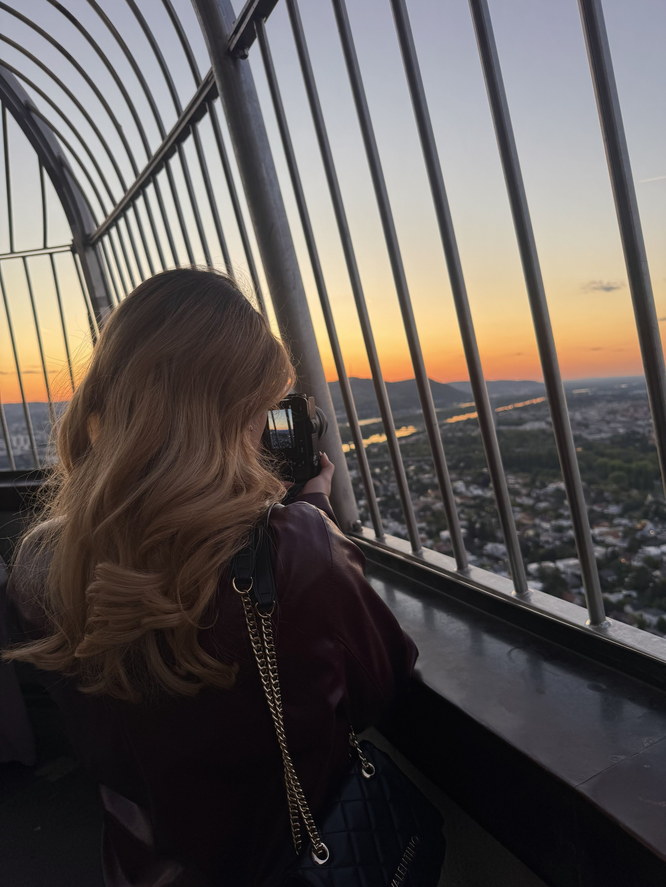

Über mich
Wer hinter Işıkta steckt und warum ich meine Reisen am liebsten mit der Kamera festhalte.

Hobby-Fotografin & angehende Informatikerin
Reisen, Städte und Momente, die ich gerne festhalte – Işıkta ist mein privates Fotoarchiv zum Durchklicken.
- Ausbildung: Informatik, Berufsschule Linz 2
- Fotografiert seit: 2017
- Ausrüstung: iPhone 15 Pro, Sony a6100
- Standort: Vorarlberg, Österreich
- Lieblingsmotiv: Städte & Sonnenuntergänge
- Bisherige Reisen: 8 Ziele auf dieser Seite
- E-Mail: selin.ulu04@gmail.com
- Status: Immer auf der Suche nach dem nächsten Motiv
Angefangen hat alles mit Reisefotos, die eigentlich nur für mich selbst gedacht waren. Mittlerweile ist daraus diese Seite geworden: ein Ort, an dem ich meine Städtetrips, besondere Reisen wie Florenz und auch andere Themen wie die Tuningworld Bodensee sammle. Kein professionelles Portfolio, sondern ein persönliches Fotoarchiv – aber mit dem Anspruch, es so übersichtlich und schön wie möglich zu präsentieren.
Diese Seite ist außerdem mein Schulprojekt für den Bootstrap-Arbeitsauftrag: eine gute Gelegenheit, Design und Programmieren zu verbinden – etwas, das mir auch bei MaysKab IT-Solutions wichtig ist.